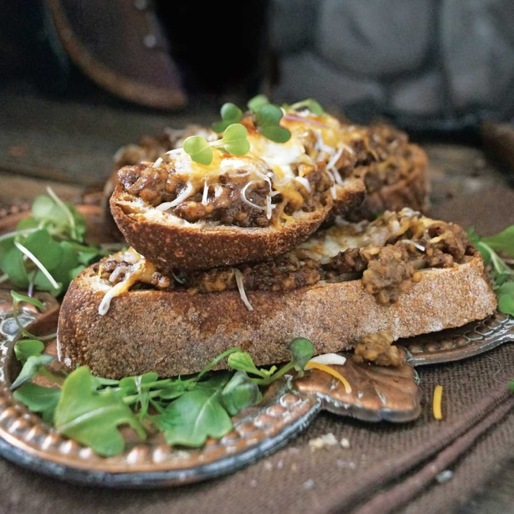

Ironforge Rations

Description
SKILL LEVEL - Master
PREP - 15 minutes
This dwarven recipe contains a beautiful pairing of haggis and beer, which has been the lunch of champions for over a thousand years. Simple, entirely satisfying, and perfect for when you need
a quick meal on indefinite guard duty.
Ingredients
- 2 tablespoons butter
- 2 to 3 shallots, thinly sliced
- Pinch of salt
- One 15-ounce can of haggis
- 1 tablespoon flour
- One 12-ounce beer
- 4 to 6 slices rustic bread
- toasted 1 cup shredded cheddar cheese
- Salt and pepper (optional)
Steps
- Melt the butter in a frying pan over medium heat. Add
the shallots and cook until they are soft and translucent. Add the salt and the haggis, breaking it up and spreading it around the pan until it is heated through. Work in the flour until it has been absorbed, then chase with about a third of the beer. The mixture should start forming into a sort of thick gravy. Depending on your preferences, add a little more of the beer for a looser texture.
- Divide the haggis evenly between your slices of bread,
top with cheddar cheese, and place under the broiler until the cheese has melted. Top with a pinch of salt and pepper to garnish, and enjoy!